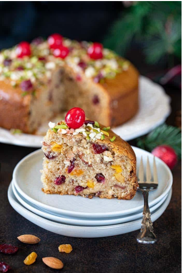

Fruit Cake

If you are looking for a fruit and nut cake that is easy to make and is an alcohol-free version of a traditionally served cake for the holidays, then this recipe fits the bill perfectly. Made with wholesome ingredients, this Spiced Fruit and Nut Cake flawlessly complements the festive verve as the candied fruits look like embedded jewels that make it incredibly joyful!
Ingredient
- Cake flour — Cake flour is the primary component of this recipe and is an excellent alternative to all-purpose flour. It has a low protein concentration which impacts the flour’s gluten quantity. When using cake flour, the cake comes out lighter and softer.
- Salt — A pinch of salt helps perk up the flavors of other ingredients in the cake.
- Baking powder and Baking soda — These are essentially added as the leavening agents to bring out the desired rise in the cake. They help the cake to become airy, light, and fluffy.
- Sugar — Brown sugar is added as the sweetening agent that also brings about the caramel flavor in our cake. It also lends a subtle brown hue that white sugar does not bring.
- Oil — Oil is used to bring the required moistness to the cake. It works as an excellent replacement for butter.
- Buttermilk — A must for this recipe as it creates a slightly acidic batter that reacts with baking soda to form a beautifully moist and tender crumb. If you don’t have buttermilk on hand, you can make it at home by combining 1½ cups of plant-based milk with 2 tablespoons of vinegar. Stir it well and let it rest for 15 minutes. There you have it – your very own homemade buttermilk.
- Orange zest — Fresh orange zest is added to our cake for flavor and instant appeal.
- Vanilla Essence — Vanilla essence lends a lovely flavor to our cake besides adding to its richness.
- Spices — Cinnamon powder, cardamom powder, and allspice are added to the cake to lift its flavor.
- Dried nuts and candied fruits — The ones that create magic in this cake are dried apricots, cashews, almonds, dried berries, dried mango, and Maraschino cherries.
- Apple juice — Used for soaking the nuts and dried fruits. The addition of orange juice will make the cake fragrant, yummy, and delicious.
Steps
-
Soak the fruits — Combine the candied fruits, peels, and dry nuts in a mixing bowl. Pour orange juice and make sure the fruits are completely immersed in the liquid. Cover the bowl with a lid or plastic wrap and let the fruit soak overnight in the juice to soften.
-
Protip — Soaking dried fruits in juice makes them more succulent and flavorful. You can soak the dried fruits for 2 days (if you choose to soak them in juice). This will make the fruits absorb the flavors abundantly.
-
Drain the juice — By the following day, the fruits and nuts would have soaked in a lot of orange juice and would have swollen and doubled in size. Drain the soaked fruits through a sieve and set them aside.
-
Preheat the oven — Preheat the oven to 350°F. Line an 8-inch springform baking pan with parchment paper and then spray with a non-stick spray. Set it aside.
-
Combine dry ingredients — Sift the flour, baking powder, baking soda, cinnamon powder, allspice, cardamom powder, and salt in a separate bowl.
-
Coat the soaked fruits — The saturated fruits tend to sink in the batter as they are laden with juice, making them heavy. To prevent this, you need to go through a bit of steps. After you drain off the soaked fruits, toss them with some flour.
The dry coating that forms on the fruits and nuts will keep them from sinking to the bottom, and they will stay suspended in the batter. This is an essential step, so do not omit it. This will prevent the sinking of fruits and nuts in the batter.
-
Assemble wet ingredients — Add the sugar and the oil to the bowl of your stand mixer. Mix it with a balloon whisk on medium speed until combined. Scrape down the sides and bottom of the bowl as needed. Add vanilla essence and lemon zest to this mixture and mix until combined
-
Prepare the batter — Add your dry ingredients to the oil+ sugar mix and mix. Add the vegan buttermilk slowly and mix until everything is well combined, scraping down the side of the bowl.Do not over-mix your batter. Now, add the flour-coated dried nuts and fruits to the batter. Fold the nuts and fruits into the batter.
-
Bake the cake — Pour the batter into the prepared greased 8-inch pan and bake.
-
Cover with foil halfway during baking — To prevent excessive browning, cover the cake with a foil sheet halfway during the baking time. This allows restricted and just sufficient heat to bake the cake.Bake the cake for 50-55 minutes or until the toothpick inserted, comes out clean. Let it cool in the pan for 10- 12 minutes before transferring onto a cooling rack
-
Garnish — Simplicity is the key! Although this fruit cake looks just amazing, being straightforward, you can go creative and have fun decorating it according to your preference.